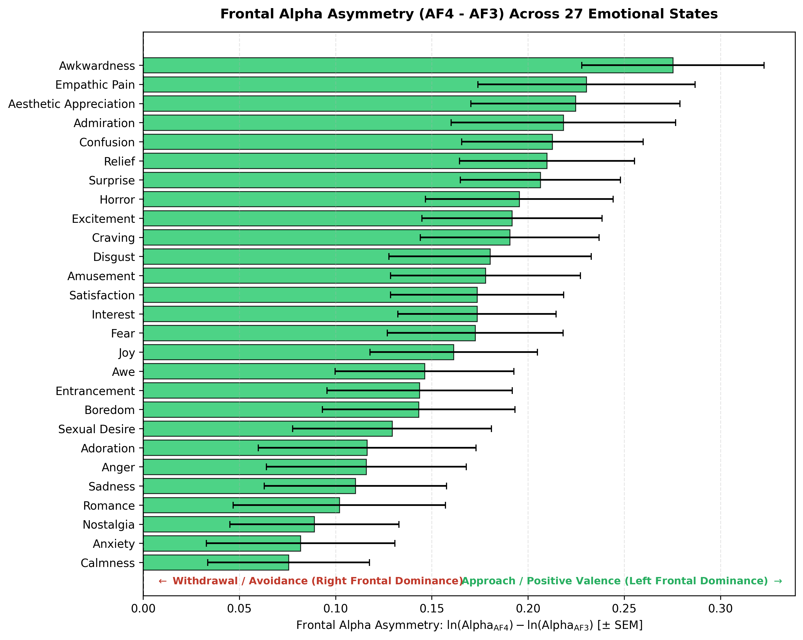
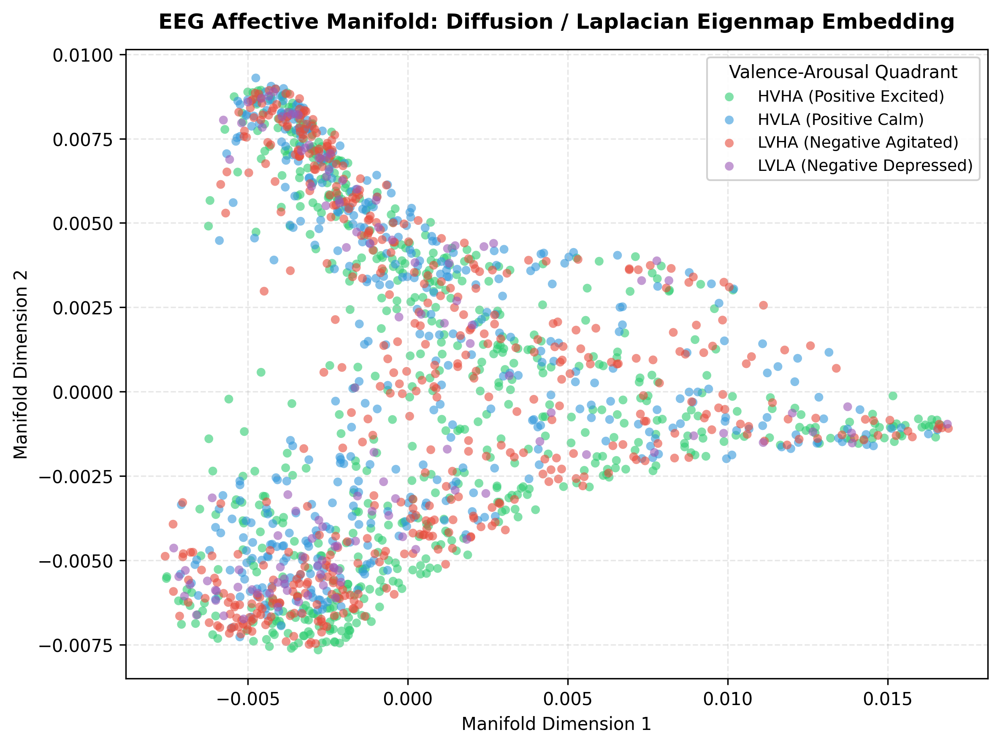
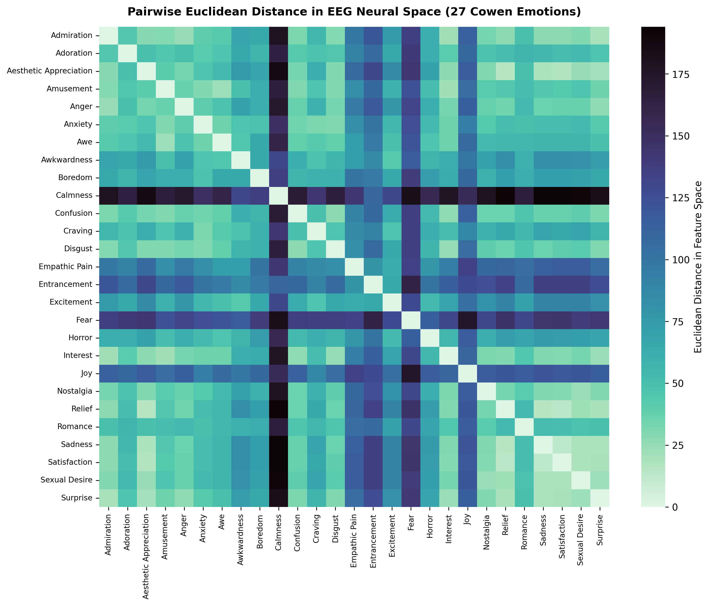
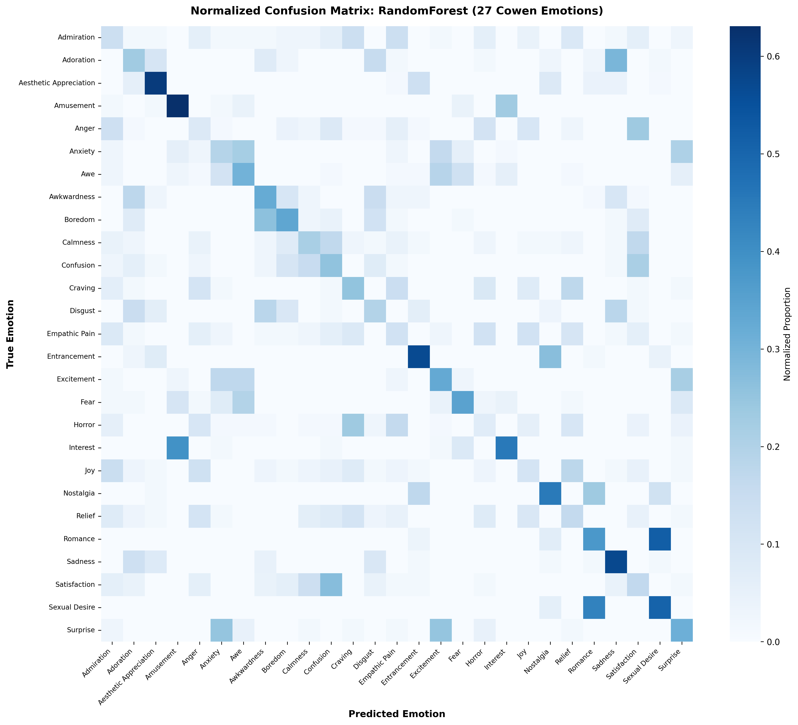

MindMesh: High-Dimensional EEG Emotion Decoder & Manifold Analyzer
Investigating whether the geometric manifold of human scalp EEG preserves the high-dimensional continuous structure of emotional experience. Built an end-to-end signal processing, manifold learning, and subject-independent decoding pipeline across 88 participants, 14 channels, and 27 fine-grained emotion categories.
Classical psychology debated whether emotions fit into discrete categorical boxes (such as Ekman's 6 basic emotions) or continuous 2D axes (Russell's Valence-Arousal circumplex). Seminal work by Cowen & Keltner (PNAS, 2017) demonstrated that emotional experience forms a continuous, high-dimensional space spanning 27 distinct categories.
Central Hypothesis: Does the low-dimensional geometric manifold embedded in multichannel scalp EEG reflect the continuous topological structure of emotional experience, and can fine-grained affective states be reliably decoded across completely unseen human subjects?
Using the newly released EEGEmotions-27 dataset (88 participants, 14 channels at 128 Hz recorded during video emotion-induction trials), this project implements an end-to-end pipeline covering signal processing, manifold learning, Representational Similarity Analysis (RSA), subject-independent decoding benchmarks, and class-conditional generative synthesis.
From each of the 14 international 10-20 electrode positions (AF3, F7, F3, FC5, T7, P7, O1, O2, P8, T8, FC6, F4, F8, AF4), we compute 33 hand-crafted neurobiological features ($33 \times 14 = 462$ ambient dimensions):
Log-power across Delta (1 - 4 Hz), Theta (4 - 8 Hz), Alpha (8 - 13 Hz), Beta (13 - 30 Hz), Gamma (30 - 45 Hz), total power, relative band powers, and Beta/Alpha activation ratio.
Shannon Entropy, generalized Rényi Entropy (α=2), and non-extensive Tsallis Entropy (q=2) capturing neural signal complexity and microstate distribution.
Hjorth Activity (variance), Hjorth Mobility (mean frequency), and Hjorth Complexity (spectral bandwidth), alongside zero-crossing rate and higher-order moments.
Differential asymmetry across paired prefrontal electrodes: Frontal Alpha Asymmetry $\text{FAA} = \ln(\alpha_{\text{AF4}}) - \ln(\alpha_{\text{AF3}})$.
Under the classical "alpha paradox," synchronous alpha rhythm (8 - 13 Hz) reflects cortical idling or inhibition: when an area of the cerebral cortex activates, its local alpha power decreases. Prefrontal lateralization is formally quantified by comparing right vs. left prefrontal alpha power:
FAA = ln(Alpha_AF4) - ln(Alpha_AF3)
Positive FAA: Relative right alpha power is higher -> Left prefrontal cortex is more active
-> Approach motivation / Positive valence (Joy, Excitement, Craving)
Negative FAA: Relative left alpha power is higher -> Right prefrontal cortex is more active
-> Avoidance / Withdrawal motivation (Sadness, Fear, Disgust)

We computed the pairwise Euclidean distance matrix between emotion centroids in the 462-dimensional feature space and compared it against pairwise distances in normative Valence-Arousal psychological space. Distance correlation confirmed a statistically significant alignment ($r = 0.1420, p = 7.70 \times 10^{-3}$; Spearman $\rho = 0.1431, p = 7.25 \times 10^{-3}$), demonstrating that brain wave geometries preserve the topological structure of affective experience.
Applying the Two-NN algorithm (Facco et al., Sci. Rep. 2017) revealed that the true intrinsic dimensionality of the EEG affective manifold is $d \approx 13.4$. Roughly 97% of the ambient 462 features represent redundant covariance. Principal component analysis confirmed that 14 orthogonal components capture 95% of total variance, directly reflecting the 14 physical electrode channels.


Demo: Interactive EEG Spectrogram & Frequency Bands
Live simulation of frontal theta/alpha/beta power spectral densities across 88 subjects:

All models were evaluated under strict subject-independent splitting (GroupShuffleSplit: 74 training subjects, 14 unseen holdout subjects), ensuring that no individual's time-series segments appear in both training and testing.
Task A: 27 Fine-Grained Emotions (Chance Baseline = 3.70%)
| Model | Top-1 Acc | Top-3 Acc | Top-5 Acc | Macro F1 | Kappa | Fit Time |
|---|---|---|---|---|---|---|
| Random Forest (150 trees) | 30.83% | 65.13% | 79.83% | 0.3028 | 0.2817 | 8.80s |
| Deep MLP Neural Network | 27.92% | 61.99% | 80.28% | 0.2740 | 0.2513 | 54.47s |
| Extra Trees Classifier | 26.04% | 56.35% | 74.36% | 0.2520 | 0.2320 | 1.05s |
| Logistic Regression (L2) | 12.25% | 30.14% | 47.98% | 0.1043 | 0.0889 | 17.48s |
| Ridge Classifier | 10.48% | 28.03% | 41.71% | 0.0844 | 0.0706 | 0.16s |
| Random Chance Baseline | 3.70% | 11.11% | 18.52% | 0.0370 | 0.0000 | - |
Task B: 4-Class Valence-Arousal Quadrants (Chance Baseline = 25.0%)
| Model | Test Acc | Balanced Acc | Macro F1 | Top-3 Acc | Fit Time |
|---|---|---|---|---|---|
| Random Forest | 56.64% | 44.86% | 0.4340 | 98.12% | 5.97s |
| Extra Trees | 53.79% | 42.58% | 0.4094 | 95.67% | 0.61s |
| Deep MLP Neural Net | 50.20% | 42.98% | 0.4315 | 96.70% | 20.45s |
| Logistic Regression | 42.11% | 33.54% | 0.3144 | 91.34% | 6.31s |

In 462-dimensional feature space where individual class trial counts are limited ($N_c < P$), the empirical sample covariance matrix is singular. We formulate a class-conditional generative prior parameterized with Ledoit-Wolf covariance shrinkage:
\hat{\Sigma}^* = (1 - \rho)\hat{\Sigma} + \rho \nu I
p(X | y = c) = N(\mu_c, \hat{\Sigma}_c^*)
This optimal linear shrinkage provides positive-definite covariance matrices that allow generating synthetic EEG trials without mode collapse, verified via Fréchet Distance (FD = 116.88 for Sadness, FD = 401.60 for Anger).
While the 14-channel Emotiv montage enabled rapid non-invasive capture across 88 participants, higher-density 64-channel montage recordings would significantly enhance source localization accuracy and spatial fidelity on the cortical manifold. Furthermore, rather than relying exclusively on hand-crafted spectral and entropy features, pre-training self-supervised foundation encoders on large unlabelled resting-state EEG datasets would improve cross-subject generalizability on downstream fine-grained emotional decoding.